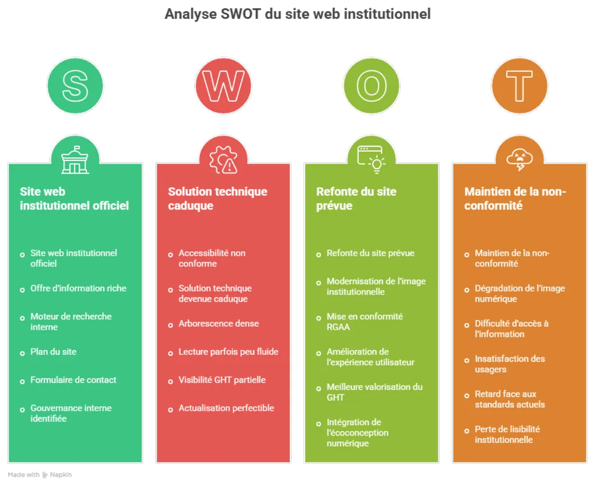
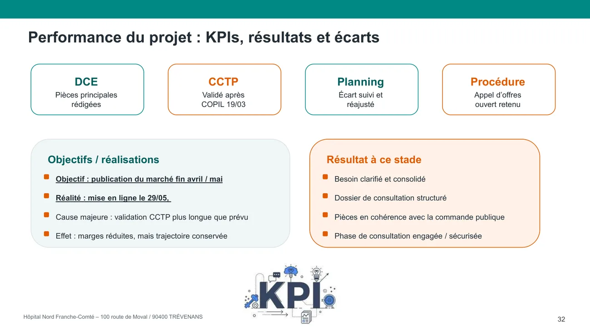

Gestion de projet · BC1 · BUT 3
Niveau 3 : Piloter un projet
Niveau attendu en troisième année : compétent. 7 apprentissages critiques, chacun avec ce qu’il recouvre, la situation où je l’ai travaillé et mes traces.
Apprentissages critiques du niveau 3
- AC31.01
Orienter vers des champs de connaissances transversaux au projet
en position de pilote, savoir quelle expertise solliciter, juridique, financière, commerciale ou technique, et orienter l’équipe vers les bonnes ressources au bon moment.
En alternance au service achats de l’Hôpital Nord Franche-Comté, la refonte du site internet du GHT Nord Franche-Comté a été mon projet de SAÉ 5.01 et 6.01. Il fallait réunir sur un même site l’hôpital, le centre de soins de longue durée, l’institut de formation aux métiers de la santé et le centre d’enseignement des soins d’urgence, et faire tenir dans un même cahier des charges des champs très différents : l’expérience des usagers et les contenus portés par le service communication, la sécurité, l’hébergement dans l’Union européenne et les sauvegardes demandés par la DSI, l’accessibilité RGAA, le RGPD et la gestion du consentement, le référencement naturel, l’écoconception et, de mon côté, les règles de la commande publique. Mon rapport part d’un diagnostic SWOT du site existant, ancien, sur une technologie propriétaire et non adapté aux mobiles.
Avec le recul, j’ai repéré la question de l’hébergement de données de santé sans pouvoir la trancher : mon rapport la laisse à qualifier, juridiquement et techniquement, selon les fonctionnalités retenues.
TracesRapport de SAÉ 6.01, cadrage du projet (document interne)Liste des besoins transmise à la cellule des marchés (document interne)

Diagnostic SWOT du site existant, tiré de mon rapport de SAÉ 6.01. - AC31.02
Définir les responsabilités et mettre en adéquation les ressources
Donner à chacun un rôle clair et vérifier que les moyens humains, matériels et financiers correspondent bien à ce que le projet exige.
Les rôles ont été posés dès le cadrage : le directeur général est le commanditaire, la responsable stratégique de la communication pilote le projet côté métier, le chef de projet informatique porte les exigences techniques et de sécurité, et j’assure pour le service achats la traduction du besoin en pièces de marché, que la cellule des marchés relit puis publie. Côté ressources, j’ai suivi une formation de trois jours au logiciel de rédaction des marchés, MARCO, puis en novembre une formation du RESAH sur les marchés publics ; j’ai centralisé comptes rendus, benchmark et points à arbitrer dans OneNote, et demandé à la DSI d’anticiper l’inscription du projet au budget de l’exercice 2026. Sur le marché de transport de corps et de biens, il a fallu trouver les bons prescripteurs, responsables des transports, assistantes sociales et services concernés, pour valider les besoins et les quantités.
Avec le recul, les rôles étaient clairs pour le site, beaucoup moins pour le transport, où les informations venaient de nombreux interlocuteurs : une matrice des responsabilités posée dès le départ m’aurait évité plusieurs relances.
TracesRapport de SAÉ 5.01, cahier des charges du projet (document interne)Diaporama de soutenance d’alternance, juin 2026 (document interne)

Méthode, outils et livrables du projet, extrait de ma soutenance d’alternance. - AC31.03
Manager les acteurs du projet
Coordonner des personnes qui ne dépendent pas toujours de soi, leur fixer des objectifs, suivre leur réalisation et garder leur engagement jusqu’au bout.
Sans autorité hiérarchique sur les prescripteurs, j’ai surtout fait le lien entre deux logiques : le service communication, attentif à l’image, aux contenus et aux parcours des usagers, et la DSI, centrée sur la sécurité, l’hébergement et l’administration du site. J’ai repris leurs besoins dans un document unique, relancé par courriel et en réunion Teams, et organisé des échanges avec deux établissements qui venaient de refaire leur site, le GH70 et le CHU de Dijon, pour connaître leur démarche, leur budget et leurs prestataires. Le COPIL du 19 mars 2026 a ensuite validé le contenu technique attendu. En démarche qualité, nous avons aussi analysé en binôme les attentes des cinq parties prenantes d’une salle de sport fictive, PERFORMANCE+ : adhérents, salariés, direction, fournisseurs et partenaires.
Avec le recul, le CCTP attendu fin décembre n’a été stabilisé qu’après le COPIL de mars, le temps que les prescripteurs consolident leur besoin : un calendrier de validation fixé avec eux dès le lancement aurait mieux protégé le planning.
TracesComptes rendus des échanges avec le GH70 et le CHU de Dijon (documents internes)Rapport d’analyse de la démarche qualité PERFORMANCE+ (binôme)PDF

Parties prenantes, contraintes et risques du projet de site, extrait de ma soutenance. 
PERFORMANCE+ : attentes de chaque partie prenante et réponses de l’entreprise. - AC31.04
Gérer et ajuster un budget
Suivre les dépenses réelles face au prévisionnel, anticiper les dépassements et réaffecter les montants quand la situation l’impose.
Aucune enveloppe n’était arrêtée au lancement. En décembre 2025, ma première estimation situait le projet entre 60 000 et 90 000 €. En avril 2026, je l’ai reprise à partir d’un benchmark de six références : quatre marchés publiés par d’autres établissements et les retours d’expérience du GH70 et du CHU de Dijon, qui situaient les opérations comparables entre 75 000 et 120 000 € HT. J’ai décomposé le coût par poste, du cadrage de l’expérience utilisateur à la maintenance annuelle, construit trois hypothèses et recommandé une cible de travail de 130 000 € HT, avec une marge prudente jusqu’à 160 000 € HT. Ce montant a ensuite conditionné le choix de la procédure.
Avec le recul, il s’agit d’un budget prévisionnel, pas d’un budget suivi en exécution, et la maintenance n’est chiffrée que par an : un coût total sur les quatre ans possibles du marché aurait mieux éclairé la décision.
TracesNote d’estimation budgétaire et rapport de SAÉ 6.01 (documents internes)Rapport de SAÉ 5.01, décembre 2025 (document interne)

Décomposition prévisionnelle des principaux postes de coûts, extraite de mon rapport de SAÉ 6.01. - AC31.05
Définir et élaborer les éléments de communication du projet
Concevoir soi-même la communication du projet : messages, publics visés, supports et calendrier de diffusion.
J’ai rédigé un compte rendu après chaque étape d’échange : la réunion de lancement du 7 octobre 2025 avec la DSI et la communication, le rendez-vous avec le CHU de Dijon le 30 octobre, la visio avec le GH70 le 19 décembre. J’ai ensuite consolidé les besoins de la DSI et de la communication dans un rapport de définition du besoin, puis rédigé la note d’estimation budgétaire et, dans MARCO, les pièces destinées aux candidats : règlement de la consultation, CCAP, acte d’engagement, décomposition du prix global et forfaitaire, cadre de mémoire technique. Pour le marché de transport, j’ai informé les prescripteurs des dates de publication et de remise des offres, puis préparé avec prudence les réponses aux quatre ou cinq questions des candidats, qui engagent l’acheteur.
Avec le recul, la communication est restée surtout écrite, par courriel ; comme je l’écris dans mon rapport de missions, des points de cadrage plus tôt avec les prescripteurs auraient permis de valider le besoin plus vite.
TracesComptes rendus de réunion, octobre à décembre 2025 (documents internes)Rapport de définition du besoin (document interne)Pièces de consultation rédigées dans MARCO (documents internes)

Début de mon compte rendu de l’échange avec le GH70, le 19 décembre 2025. - AC31.06
Ajuster ou recadrer des éléments du projet
Réagir quand le projet dérive en modifiant le planning, le périmètre ou l’organisation, et faire valider ces changements par les personnes concernées.
Le projet a dû être recadré deux fois. Sur le calendrier d’abord : je visais une publication au plus tard le 15 mars 2026, mais le CCTP, attendu fin décembre, n’a été stabilisé qu’après le COPIL du 19 mars. J’ai recalé le Gantt : l’avis de marché, prévu le 5 mai, est parti le 29 mai et a été publié le 1er juin, et la remise des offres est passée du 5 au 29 juin 2026. Sur la procédure ensuite : le montant estimé laissait penser à une procédure adaptée, mais l’extraction sous Business Object des dépenses déjà engagées sur la même famille d’achats a fait dépasser le seuil des procédures formalisées, et le marché est parti en appel d’offres ouvert. Sur le marché des pains et viennoiseries, le placement du titulaire en redressement judiciaire m’a fait préparer des scénarios selon le jugement attendu le 2 juin 2026, pour éviter une rupture ou des achats hors marché.
Avec le recul, le planning initial reposait sur un CCTP livré fin décembre, sans marge pour les validations : je prévoirais aujourd’hui ce temps dès le départ, et je vérifierais la computation des seuils avant même de recommander une procédure.
TracesDiagramme de Gantt prévisionnel et réel (document interne)Rapport de SAÉ 6.01, planification et procédure (document interne)Rapport de missions, marché des pains et viennoiseries (document interne)

Planning prévisionnel et réel des étapes de la consultation, extrait de ma soutenance. - AC31.07
Clore un projet
Livrer, dresser le bilan avec les parties prenantes, archiver les documents et formaliser le retour d’expérience pour les projets suivants.
Mon rapport de SAÉ 6.01 se termine par un bilan et un rapport d’achèvement de la phase de préparation : besoin clarifié et consolidé, CCTP validé, pièces rédigées en cohérence avec la commande publique, procédure retenue, consultation mise en ligne le 29 mai 2026. J’y mesure les écarts, dont environ trois mois de retard sur le CCTP, j’en explique la cause et je fixe la suite : réception et analyse des offres, attribution, puis exécution d’un marché conclu pour un an et reconductible trois fois. Dans la démarche qualité de PERFORMANCE+, nous avons aussi clos l’analyse sur un plan d’action par priorité, chacun avec ses indicateurs de suivi, en commençant par la disponibilité des équipements, le critère le moins bien noté, à 3,3 sur 5.
Avec le recul, le projet n’était pas clos au sens strict à la fin de l’année, mon rapport le dit lui-même : la clôture porte sur la préparation du marché, pas encore sur son résultat.
TracesRapport de SAÉ 6.01, bilan et clôture (document interne)Rapport d’analyse de la démarche qualité PERFORMANCE+ (binôme)PDF

Indicateurs, résultats et écarts du projet de site, extrait de ma soutenance.


Bilan du niveau 3
Points forts : porter, pour le service achats, un projet transversal jusqu’à la publication du marché : besoin consolidé entre la communication et la DSI, benchmark, budget prévisionnel, pièces rédigées dans MARCO et planning recalé après un retard de trois mois.
À renforcer : anticiper le temps de validation des prescripteurs, et clore réellement un projet, avec un bilan partagé une fois le résultat connu.
Pour la suite : en master Entrepreneuriat et management de projet, toujours en alternance à l’HNFC, suivre l’exécution des marchés que j’ai préparés et piloter un projet du besoin jusqu’à sa clôture.